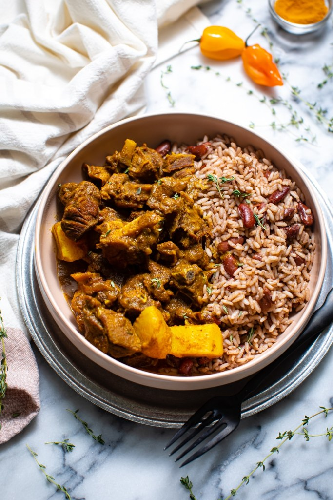
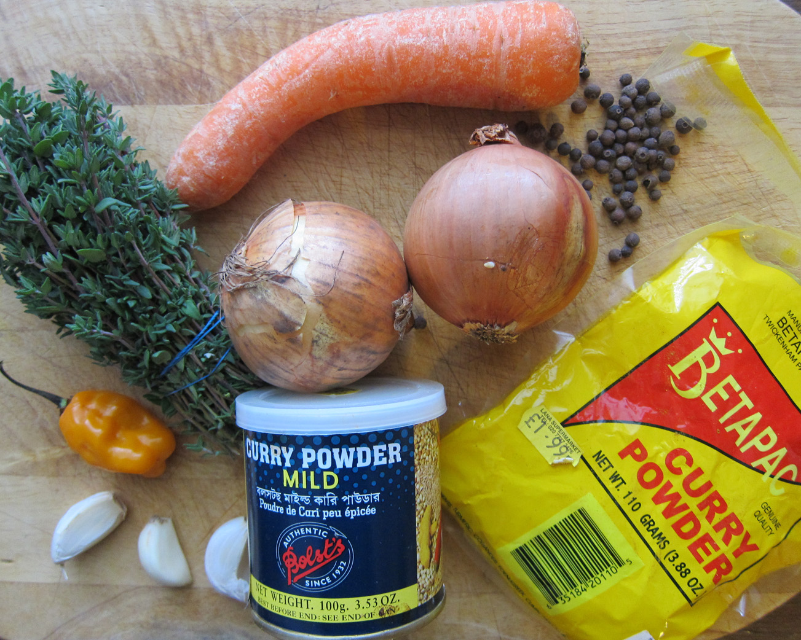
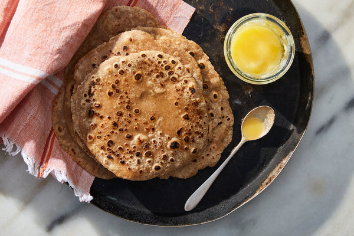

How to Make Curry Goat with Roti
Step 1:
- Dice the goat meat
- Chop the garlic, onions and ginger
- Prepare your herbs and spices: curry powder,
tumeric powder, cumin seeds, mixed spice powder,
mustard seeds, fresh curry leaves, fresh bay
leaves, coriander and
cinnamon sticks
- Coat the meat in salt and pepper and set aside
until ready to cook


Step 2:
- Sautee garlic, onions and ginger with the spices
and curry and bay leaves
- Mix curry powder and mixed spice with a cup of
water and add to the wok
- Stir in the meat, add cinnamon sticks and cover
to cook for 25mins, stirring periodically
- Add a tablespoon of plain yoghurt and stir
- Add the coriander leaves and cover wok again to
let the meat cook

Step 3: Making the roti
- Prepare sharp flour, boiled water, salt, a
rolling pin, and ghee
- Boil the water in a kettle or pot, while waiting
to boil, pour sharp flour in a bowl and add a
pinch of salt
- When water is ready, add to the flour and mix
with a wooden spoon until it reaches a dough
consistency
- When comfortable to do so, use your hands to
gently knead the dough and add two tbsp of ghee
to keep the dough soft
- Break off pieces of dough and roll each one into
a ball
- When ready to roll your roti, take a dough ball
and flatten it gently and coat both sides with
flour to be easier to roll
- Using the rolling pin, roll out the dough flat
into circles, like a tortilla
- Place the rolled out roti onto a preheated pan
and commence cooking, flipping on both sides for
an even cook. NOTE: the first two flips, you
should dab ghee on the roti focusing on the
edges so they do not form a crispy edge
"Curry goat"